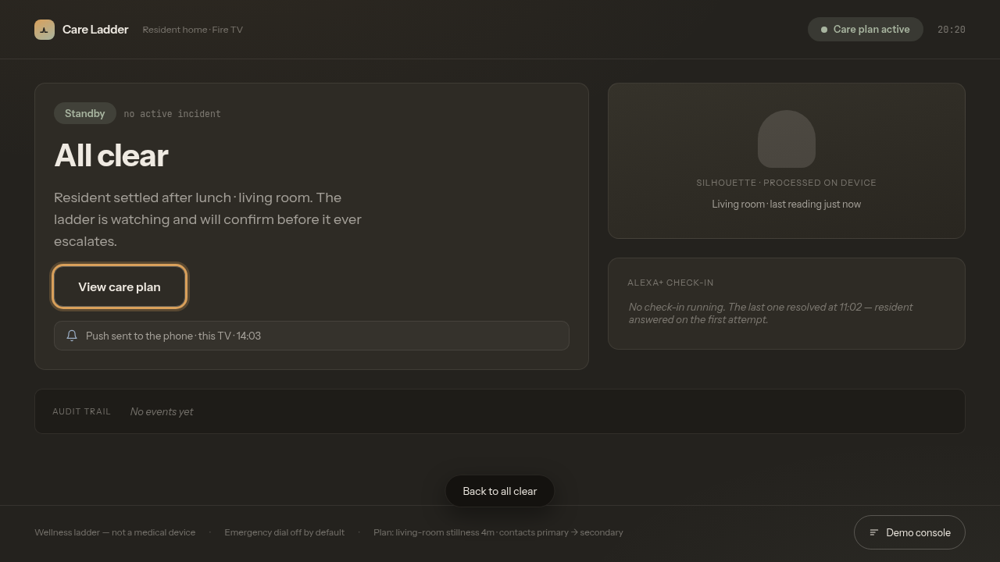
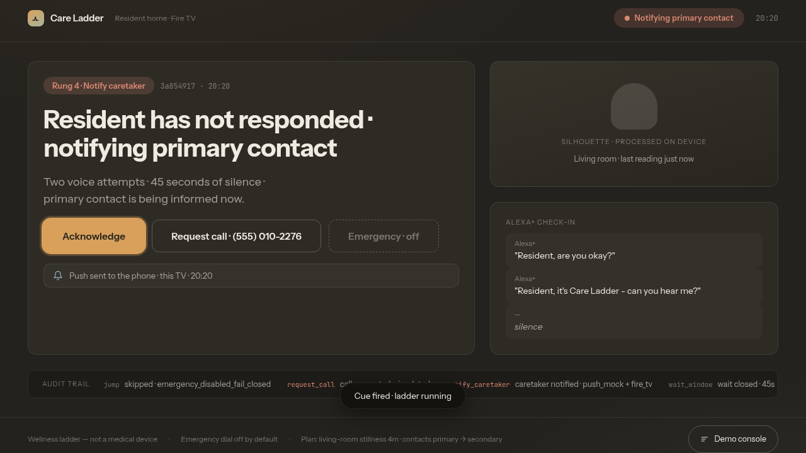

OpenCV notices something wrong - stillness, a covered camera, a fall signature. An Alexa+ agent checks in by voice, waits, and only then pages the family on Alexa mobile - while the Fire TV in the living room mirrors the whole trail, quoted conversation and all.

The ladder is the product: a care plan climbs rung by rung, and each climb is an auditable event. Voice check-ins carry the resident's real words. A covered camera is treated as privacy, never distress. And the last rung stays dark.
Every voice reply is classified into one of three buckets before the ladder decides anything. Concern always wins over reassurance, and silence is never read as consent. Try it - this is the real classification logic from the repo, running in your browser.
Genuine reassurance, unmixed: "fine", "just resting", "don't worry". May stand the ladder down - resolve at the check-in rung, no page, no call.
Any concern token - hurt, fell, help, can't get up - or an explicit call request. The ladder does not clear; the family is paged with the quoted reply.
Groans, empty transcription, garbage ASR. Never invents OK: treated as no answer, and the ladder keeps climbing calmly.
When the family is paged, the inform card runs a conversation: a countdown, three actions, and free-text follow-up. The caregiver's answer is classified with the same fail-closed discipline - also the real logic from the repo, ported to this page.
"On my way", "got it", "I'll call her myself" - a real human took the page. The ladder stops pressuring; the conversation waits for an outcome.
An explicit ask for the call rung: the request-call step fires for the primary contact, simulated in this build.
"Can't take it - go to Secondary". Escalation pressure moves to the next contact, first ack still wins.
"Called Mom, she's fine", "checked on her" - a free-text close. The incident resolves with the outcome recorded in the trail.
Anything that doesn't read as a real ack. Never invents one: the countdown and escalation continue exactly as before.
The Alexa+ agent drives the ladder and speaks in the home; the caregiver's Alexa mobile app receives the page and closes the loop; the Fire TV mirrors it all for everyone on the couch - quoted conversation, rung rail, and full audit trail.
Designed for the couch, driven by the remote: D-pad spatial focus, TV-scale type, and a presence panel that reads calm from across the room. Silhouettes only - no live feed, ever.

The family is paged on Alexa mobile; this TV mirrors the moment - headline in plain words, both attempts quoted, and the ladder showing exactly which rung fired. The trail stays for the record.
Self-hosted inside the same FastAPI app at /mcp - Streamable HTTP per the MCP spec 2025-11-25+. An in-repo MCP client plays the Alexa+ agent and drives the ladder over real HTTP: initialize, tool calls, caregiver ack, outcome, done.
The emergency rung is enabled: false in the plan and fail-closed in code. The TV's hold-to-review gate explains what a live build would do - and never enables it.
Frames are privacy-transformed before they leave the device path - blur or filled silhouette. No live video exists on any surface, and no raw identifiable frames ship in demos.
Every cue, attempt, wait, jump, ack and outcome is a timestamped event - the same trail the Alexa+ agent, the caregiver app and the Fire TV read from.
Demo contacts use NANP reserved fiction only - (555) 010-2276. The dialer is a stub; no PSTN session can open from this build.